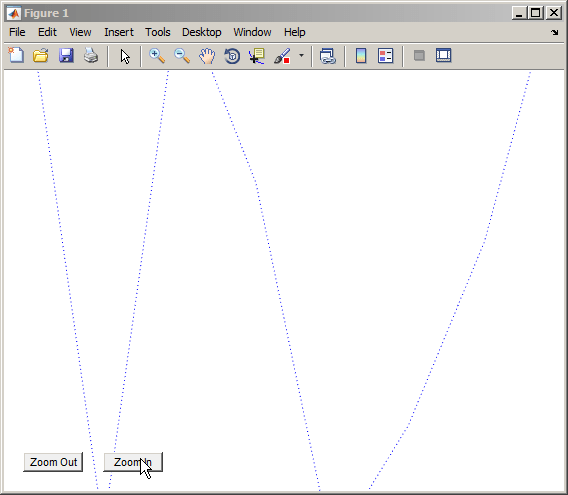
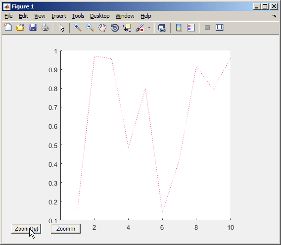

Define an Interface Superclass
Interfaces
The properties and methods defined by a class form the interface that determines how class users interact with objects of the class. When creating a group of related classes, interfaces define a common interface to all these classes. The actual implementations of the interface can differ from one class to another.
Consider a set of classes designed to represent various types of graphs. All classes must implement a Data property to contain the data used to generate the graph. However, the form of the data can differ considerably from one type of graph to another. Each class can implement the Data property differently.
The same differences apply to methods. All classes can have a draw method that creates the graph, but the implementation of this method changes with the type of graph.
The basic idea of an interface class is to specify the properties and methods that each subclass must implement without defining the actual implementation. This approach enables you to enforce a consistent interface to a group of related objects. As you add more classes in the future, the interface remains the same.
Interface Class Implementing Graphs
This example creates an interface for classes used to represent specialized graphs. The interface is an abstract class that defines properties and methods that the subclasses must implement, but does not specify how to implement these components.
This approach enforces the use of a consistent interface while providing the necessary flexibility to implement the internal workings of each specialized subclass differently.
In this example, a namespace folder contains the interface, derived subclasses, and a utility function:
+graphics/GraphInterface.m % abstract interface class +graphics/LineGraph.m % concrete subclass
Interface Properties and Methods
The GraphInterface class specifies the following
properties, which the subclasses must define:
Primitive— Handle of the graphics object used to implement the specialized graph. The class user has no need to access these objects directly so this property hasprotectedSetAccessandGetAccess.AxesHandle— Handle of the axes used for the graph. The specializedgraphobjects can set axes object properties. This property hasprotectedSetAccessandGetAccess.Data— All subclasses of theGraphInterfaceclass must store data. The type of data varies and each subclass defines the storage mechanism. Subclass users can change the data values so this property has public access rights.
The GraphInterface class names three abstract methods that subclasses must implement. The GraphInterface class also suggests in comments that each subclass constructor must accept the plot data and property name/property value pairs for all class properties.
Subclass constructor — Accept data and P/V pairs and return an object.
draw— Used to create a drawing primitive and render a graph of the data according to the type of graph implemented by the subclass.zoom— Implementation of a zoom method by changing the axesCameraViewAngleproperty. The interface suggests the use of thecamzoomfunction for consistency among subclasses. The zoom buttons created by theaddButtonsstatic method use this method as a callback.updateGraph— Method called by theset.Datamethod to update the plotted data whenever theDataproperty changes.
Interface Guides Class Design
The namespace of classes that derive from the
GraphInterface abstract class implement the following
behaviors:
Creating an instance of a specialized
GraphInterfaceobject (subclass object) without rendering the plotSpecifying any or none of the object properties when you create a specialized
GraphInterfaceobjectChanging any object property automatically updates the currently displayed plot
Allowing each specialized
GraphInterfaceobject to implement whatever additional properties it requires to give class users control over those characteristics.
Define the Interface
The GraphInterface class is an abstract class that defines the methods and properties used by the subclasses. Comments in the abstract class describe the intended implementation:
classdef GraphInterface < handle % Abstract class for creating data graphs % Subclass constructor should accept % the data that is to be plotted and % property name/property value pairs properties (SetAccess = protected, GetAccess = protected) Primitive AxesHandle end properties Data end methods (Abstract) draw(obj) % Use a line, surface, % or patch graphics primitive zoom(obj,factor) % Change the CameraViewAngle % for 2D and 3D views % use camzoom for consistency updateGraph(obj) % Update the Data property and % update the drawing primitive end methods function set.Data(obj,newdata) obj.Data = newdata; updateGraph(obj) end function addButtons(gobj) hfig = get(gobj.AxesHandle,'Parent'); uicontrol(hfig,'Style','pushbutton','String','Zoom Out',... 'Callback',@(src,evnt)zoom(gobj,.5)); uicontrol(hfig,'Style','pushbutton','String','Zoom In',... 'Callback',@(src,evnt)zoom(gobj,2),... 'Position',[100 20 60 20]); end end end
The GraphInterface class implements the property set method
(set.Data) to monitor changes to the
Data property. An alternative is to define the
Data property as Abstract and enable
the subclasses to determine whether to implement a set access method for this
property. The GraphInterface class defines a set access
method that calls an abstract method (updateGraph, which each
subclass must implement). The GraphInterface interface
imposes a specific design on the whole namespace of classes, without limiting
flexibility.
Method to Work with All Subclasses
The addButtons method adds push buttons for the zoom methods, which each subclass must implement. Using a method instead of an ordinary function enables addButtons to access the protected class data (the axes handle). Use the object zoom method as the push-button callback.
function addButtons(gobj) hfig = get(gobj.AxesHandle,'Parent'); uicontrol(hfig,'Style','pushbutton',... 'String','Zoom Out',... 'Callback',@(src,evnt)zoom(gobj,.5)); uicontrol(hfig,'Style','pushbutton',... 'String','Zoom In',... 'Callback',@(src,evnt)zoom(gobj,2),... 'Position',[100 20 60 20]); end
Derive a Concrete Class — LineGraph
This example defines only a single subclass used to represent a simple line
graph. It derives from GraphInterface, but provides
implementations for the abstract methods draw,
zoom, updateGraph, and its own
constructor. The base class GraphInterface and subclass are
all contained in a namespace (graphics), which you must use
to reference the class name:
classdef LineGraph < graphics.GraphInterfaceAdd Properties
The LineGraph class implements the interface defined in the GraphInterface class and adds two additional properties—LineColor and LineType. This class defines initial values for each property, so specifying property values in the constructor is optional. You can create a LineGraph object with no data, but you cannot produce a graph from that object.
properties
LineColor = [0 0 0];
LineType = '-';
endThe LineGraph Constructor
The constructor accepts a struct with x and y coordinate data, and property name/property value pairs:
function gobj = LineGraph(data,varargin) if nargin > 0 gobj.Data = data; if nargin > 2 for k=1:2:length(varargin) gobj.(varargin{k}) = varargin{k+1}; end end end end
Implement the draw Method
The LineGraph
draw method uses property values to create a line object. The LineGraph class stores the line handle as protected class data. To support the use of no input arguments for the class constructor, draw checks the Data property to determine if it is empty before proceeding:
function gobj = draw(gobj) if isempty(gobj.Data) error('The LineGraph object contains no data') end h = line(gobj.Data.x,gobj.Data.y,... 'Color',gobj.LineColor,... 'LineStyle',gobj.LineType); gobj.Primitive = h; gobj.AxesHandle = get(h,'Parent'); end
Implement the zoom Method
The LineGraph
zoom method follows the comments in the GraphInterface class which suggest using the camzoom function. camzoom provides a convenient interface to zooming and operates correctly with the push buttons created by the addButtons method.
Define the Property Set Methods
Property set methods provide a convenient way to execute code automatically when the value of a property changes for the first time in a constructor. (See Property Get and Set Methods.) The linegraph class uses set methods to update the line primitive data (which causes a redraw of the plot) whenever a property value changes. The use of property set methods provides a way to update the data plot quickly without requiring a call to the draw method. The draw method updates the plot by resetting all values to match the current property values.
Three properties use set methods: LineColor, LineType, and Data. LineColor and LineType are properties added by the LineGraph class and are specific to the line primitive used by this class. Other subclasses can define different properties unique to their specialization (for example, FaceColor).
The GraphInterface class implements the Data property set method. However, the GraphInterface class requires each subclass to define a method called updateGraph, which handles the update of plot data for the specific drawing primitive used.
The LineGraph Class
Here is the LineGraph class definition.
classdef LineGraph < graphics.GraphInterface properties LineColor = [0 0 0] LineType = '-' end methods function gobj = LineGraph(data,varargin) if nargin > 0 gobj.Data = data; if nargin > 1 for k=1:2:length(varargin) gobj.(varargin{k}) = varargin{k+1}; end end end end function gobj = draw(gobj) if isempty(gobj.Data) error('The LineGraph object contains no data') end h = line(gobj.Data.x,gobj.Data.y,... 'Color',gobj.LineColor,... 'LineStyle',gobj.LineType); gobj.Primitive = h; gobj.AxesHandle = h.Parent; end function zoom(gobj,factor) camzoom(gobj.AxesHandle,factor) end function updateGraph(gobj) set(gobj.Primitive,... 'XData',gobj.Data.x,... 'YData',gobj.Data.y) end function set.LineColor(gobj,color) gobj.LineColor = color; set(gobj.Primitive,'Color',color) end function set.LineType(gobj,ls) gobj.LineType = ls; set(gobj.Primitive,'LineStyle',ls) end end end
Use the LineGraph Class
The LineGraph class defines the simple API specified by the
graph base class and implements its specialized type of
graph:
d.x = 1:10; d.y = rand(10,1); lg = graphics.LineGraph(d,'LineColor','b','LineType',':'); lg.draw; lg.addButtons;
Clicking the Zoom In button shows the
zoom method providing the callback for the button.

Changing properties updates the graph:
d.y = rand(10,1); lg.Data = d; lg.LineColor = [0.9,0.1,0.6];
Now click Zoom Out and see the new results:
